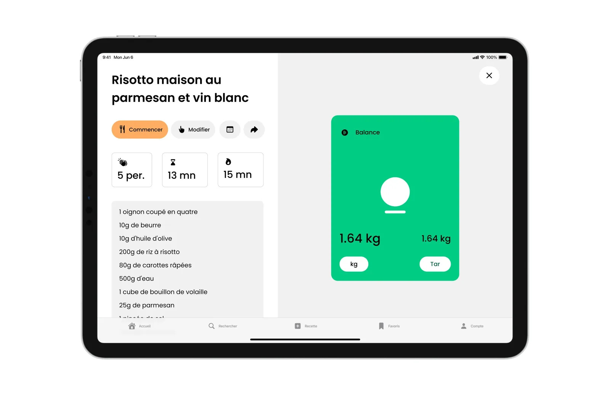
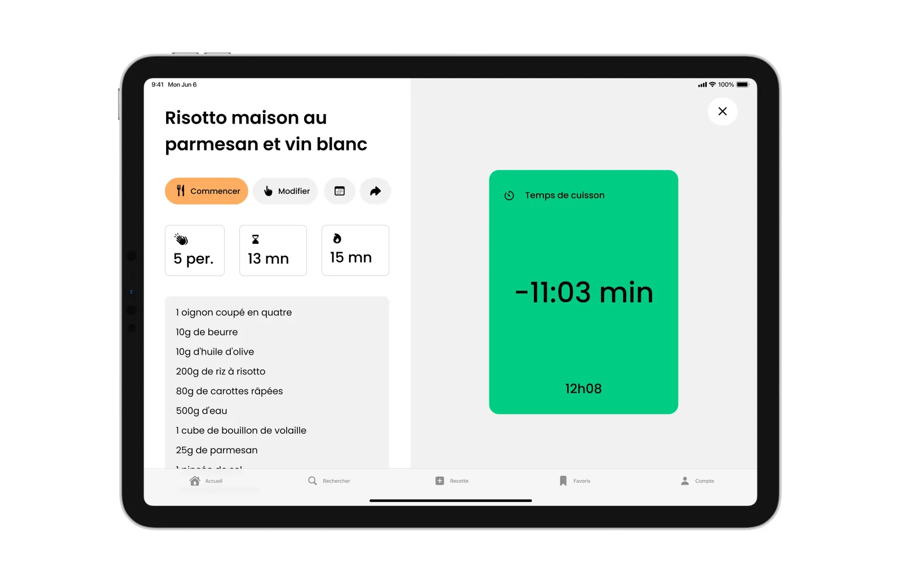

Magicook est un concept de refonte de l’application Magimix. J’ai conçu une interface tablette qui accompagne la recette, de sa découverte jusqu’à la fin de la cuisson.
Contexte et objectif
Trouver une recette par thème ou par saison, reprendre une préparation en cours, avancer étape par étape : voilà le cœur du parcours. Le concept explore aussi la personnalisation et le partage des recettes.
Le projet en images
Choisir une recette
un accueil organisé par sélections et un accès direct à la recette en cours.
Préparer les ingrédients
la fiche rassemble les ingrédients, le nombre de personnes et les durées de préparation et de cuisson.

Peser
un écran de balance accompagne la préparation des ingrédients.
Suivre les étapes
une instruction à la fois, avec les actions pour revenir à l’étape précédente ou poursuivre la recette.

Suivre la cuisson
pendant la cuisson, le temps restant passe au premier plan.

Signaler le dépassement
un état dédié, en rouge, quand le temps de cuisson est dépassé.
Adapter ses recettes
modifier et sauvegarder ses recettes : température, étapes et actions de préparation.
Ce que j’en retiens
Les maquettes couvrent tout le parcours, du choix de la recette au suivi de la cuisson. Mon fil conducteur : afficher ce qui sert au moment présent, et rien d’autre. Les ingrédients avant de commencer, une seule instruction pendant la recette, le temps restant pendant la cuisson.
En cuisine, l’écran n’est pas le centre de l’attention.